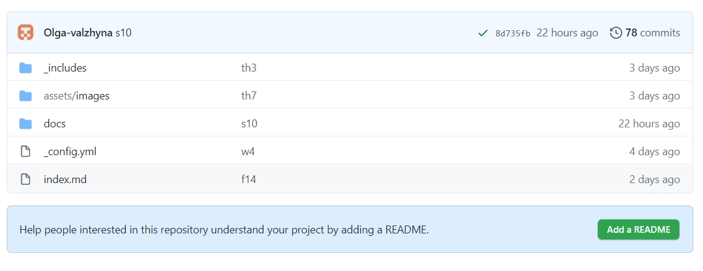
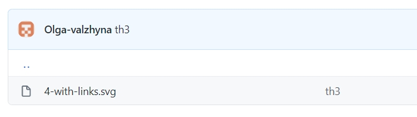
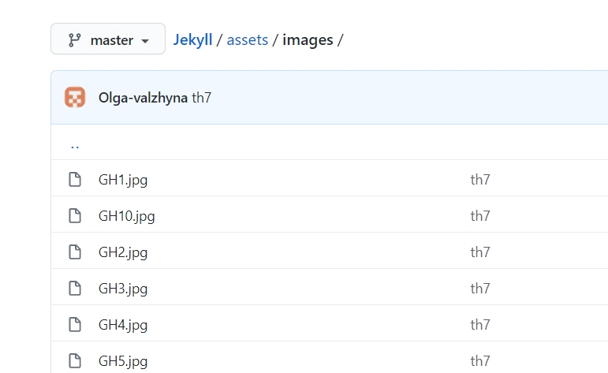
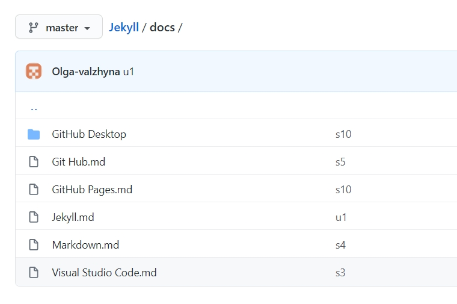
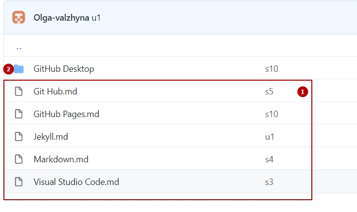
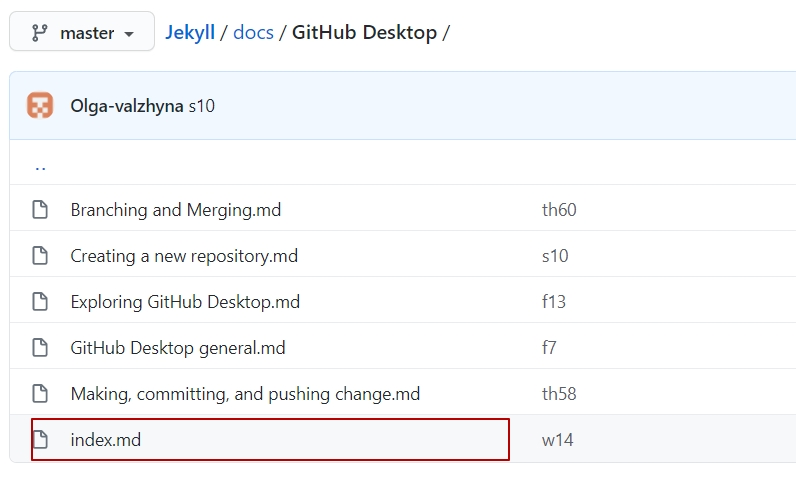

Just-the-Docs and Jekyll
Just the Docs gives your documentation a jumpstart with a responsive Jekyll theme that is easily customizable and hosted on GitHub Pages.
Just the Docs
Just the Docs is built for a static site generator, that is called Jekyll. Just the Docs requires no special plugins and can run on GitHub Pages’ standard Jekyll compiler.
Jekyll
Jekyll is a simple, blog-aware, static site generator perfect for personal projects, or organization sites. Jekyll takes your content, renders Markdown templates, and spits out a complete, static website. As Jekyll is a static site generator, it does not use databases to generate the pages dynamically. Instead of using databases, Jekyll supports loading content from YAML, JSON, CSV, and TSV files. Jekyll is the engine behind GitHub Pages, a GitHub feature that allows users to host websites based on their GitHub repositories for no additional cost.
Username.github.io
Create a new repository named Username.github.io(where “username” is your actual GitHub user name). If you scroll down on the settings page, you’ll see the GitHub Pages section near the bottom. Click the Choose a theme button to start the process of creating your site.
In order to create a site with the help of Just the Docs your Username.github.io should contain the following folders and files.
- _includes
It's a folder with SVG files (in case you have them. If not, you don't need such a folder).
 - assets/images
This folder contains JPGs, PNGs and PDFs.
 - docs
All the documents are presented here.
And depending on the location of the document their structure is different.
- 1 docs/file.md
-- layout: default title: Title nav_order: 2 --- # Title Markdown text goes here. - 2 docs/chapter/file.md
--- layout: default title: Title parent: Chapter title nav_order: 1 --- # Title Markdown text goes here.
Within each chapter there should be a separate index.md file
docs/chapter/index.md
--- layout: default title: Chapter title nav_order: 3 (the order in the main Table of Contents) has_children: true --- # Title Markdown text goes here. - 1 docs/file.md
- _config.yml
This file is copied from Just the Docs
name: _____________ title: Page title description: Page description remote_theme: username/just-the-docs (username = your account name) color_scheme: light/dark aux_links: "Source repository on GitHub": - "//github.com/username/username.github.io“ back_to_top: true back_to_top_text: "Back to top“ footer_content: "_____________" - index.md
--- layout: default title: Introduction (is presented in Table of Contents) nav_order: 1 (index.md is the first page in your Table of Contents) description: “Description of this chapter" permalink: / --- # Introduction Markdown text goes here.